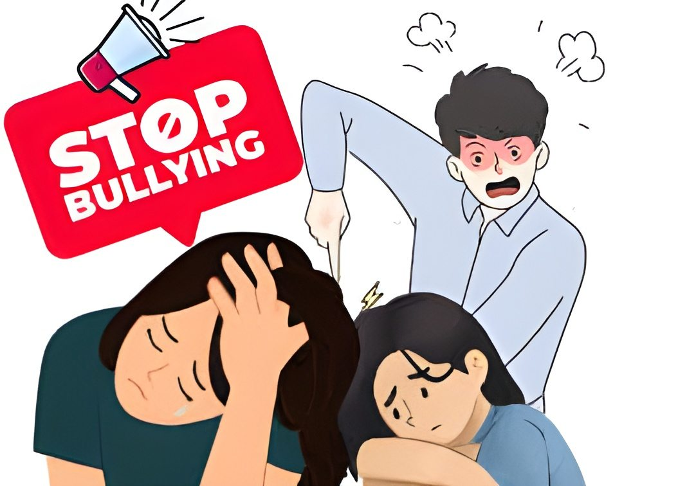
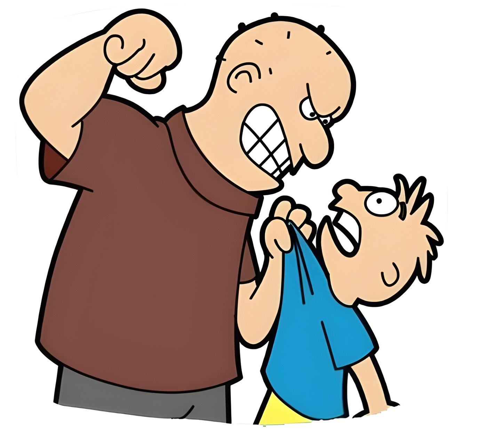
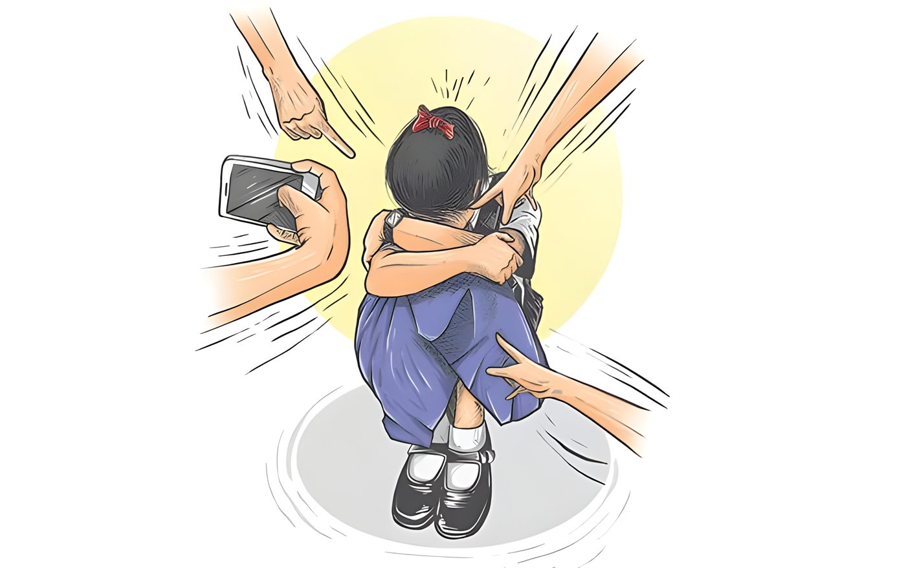
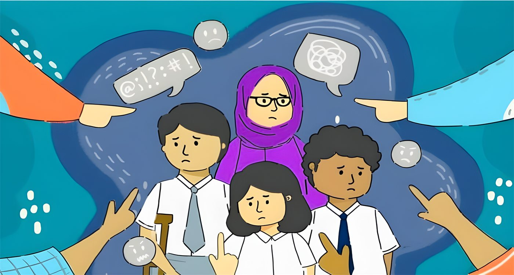

- Tunjukkan sikap percaya diri saat menghadapi pelaku.
- Jangan tunjukkan reaksi yang diharapkan pelaku; tetap tenang dan tinggalkan lokasi.
- Selalu berada di lingkungan aman, bersama teman atau kelompok yang mendukung.
- Simpan bukti (screenshot) untuk kasus cyber bullying.
- Bicara dan laporkan kepada orang dewasa yang dipercaya.
Poster Edukasi & Pencegahan di Sekolah
Satu tawa untukmu,
Satu tawa untukmu,
luka selamanya untuknya.
Tertawa di depan orang yang merugi terasa menyenangkan. Tapi bagi yang dirugikan, satu tawa bisa menjadi luka yang bertahan lama. Yuk, kita belajar membedakan bercanda dan bullying sebelum kita menyakitkan orang lain.
STOPBULLYING




Halaman 2
Tidak semua yang terlihat seperti bercanda itu benar-benar bercanda.
Cara paling cepat membedakan keduanya: apakah temannya juga ikut tertawa, dan apakah dia merasa nyaman?
Ciri Bercanda (Bukan Bullying)
- Dilakukan suka sama suka — semua yang terlibat ikut tertawa.
- Tidak ada niat untuk menyakiti atau merendahkan.
- Jika salah satu bilang “jangan” atau “ga lucu”, langsung berhenti dan meminta maaf.
- Tidak ada ketimpangan kekuasaan — semua terasa setara.
- Terjadi di situasi yang nyaman untuk semua pihak.
Ciri Bullying (Berbahaya)
- Hanya satu pihak yang tertawa; pihak lain terlihat sedih, diam, marah, atau tersinggung.
- Ada niat menyakiti, menjatuhkan, atau menunjukkan dominasi.
- Terus berlanjut walaupun korban sudah bilang berhenti, tidak suka, atau menjauh.
- Ada ketimpangan kekuatan: pelaku lebih kuat, lebih populer, atau lebih banyak teman.
- Korban merasa takut, malu, dan tidak berdaya untuk melawan.
“Bercanda yang baik itu berhenti ketika temannya tidak nyaman. Kalau terus dilanjutkan setelah korban tidak nyaman, itu sudah bukan bercanda — itu bullying.”
Bercanda
Memanggil teman dengan panggilan lucu, dan teman itu juga memanggil balik dengan panggilan lucu.
Bullying
Memanggil teman dengan julukan jelek terus-menerus di depan kelas sampai teman itu menangis dan tidak berani masuk kelas.
Halaman 3 — Materi
Tujuan Materi Hari Ini :
- Memahami apa itu bullying yang sebenarnya.
- Bisa membedakan dengan jelas mana Bullying dan mana Bercanda.
- Tahu dampaknya, cara menghadapinya, dan bagaimana cara mencegahnya bersama.
Apa Itu Bullying? (Perundungan)
Bullying (perundungan) adalah tindakan agresif yang dilakukan secara sengaja dan berulang kali oleh seseorang atau sekelompok orang yang memiliki kekuatan atau kekuasaan lebih besar terhadap individu lain yang merasa tidak berdaya, dengan tujuan merugikan atau menyakiti secara fisik maupun psikologis.
Bentuknya tidak hanya fisik — bisa berupa kata-kata, pengasingan, hingga cyber bullying.
Tiga elemen kunci yang harus ada:
- Ketidakseimbangan KekuatanPelaku mengandalkan usia, ukuran fisik, status sosial, atau popularitas.
- KeberulanganTerjadi lebih dari sekali atau berpotensi terjadi berulang kali.
- KesengajaanAda niat yang jelas untuk menyakiti atau merendahkan korban.
Kalau salah satu dari tiga elemen ini hilang — terutama unsur kesengajaan menyakiti dan keberulangan — maka itu bukan bullying, melainkan bisa jadi bercanda atau konflik biasa.
Bentuk Bullying :
Klik gambar atau tulisan di bawah ini untuk membaca penjelasan lengkapnya.
FISIK
Lihat Pengertian ▼
VERBAL
Lihat Pengertian ▼
SOSIAL
Lihat Pengertian ▼
CYBER
Lihat Pengertian ▼
Lihat juga: Bercanda atau Bullying? ➔ · Lihat juga: Non-Verbal Bullying ➔
Cara Menghindari Bullying :
- Kebijakan dan SOP Anti-Bullying yang jelas serta transparan.
- Edukasi empati, toleransi, dan kesehatan mental yang berkelanjutan.
- Layanan pengaduan aman: kotak aduan, platform daring, atau konseling BK.
- Pengawasan optimal di area rawan: kantin, lorong, toilet, dan lapangan.
- Duta Anti-Bullying (konselor sebaya) dari siswa sendiri.
Dampak Bullying :
Bullying tidak hanya melukai korban. Klik salah satu kartu untuk membaca rinciannya.
Bagi Korban
Kecemasan, depresi, gangguan tidur, menurunnya prestasi belajar, dan rendahnya harga diri.
Rincian ➔
Bagi Pelaku
Menjadi pribadi yang agresif dan impulsif, berisiko terlibat kriminal, dan sulit membangun relasi sehat.
Rincian ➔
Bagi Saksi
Merasa bersalah, takut, dan tidak berdaya. Diamnya dianggap menyetujui bullying yang terjadi.
Rincian ➔
Jerat Hukum Bullying :
Bullying adalah tindakan yang bisa dipidana. Selain sanksi di sekolah, pelaku bullying juga dapat ditindak secara hukum.
- Pasal 76C UU No. 35 Tahun 2014 — Melarang melakukan atau turut serta melakukan kekerasan terhadap anak.
- Pasal 80 UU No. 35 Tahun 2014 — Sanksi pidana bagi pelaku kekerasan terhadap anak.
- UU ITE (UU No. 19 Tahun 2016 jo. UU No. 1 Tahun 2024) — Cyber bullying melalui platform digital.
- Permendikbudristek No. 46 Tahun 2023 — Pencegahan dan penanganan kekerasan di satuan pendidikan.
- UU No. 11 Tahun 2012 (SPPA) — Proses hukum bagi pelaku anak dengan pendekatan diversi.
Layanan Pengaduan :
Melihat bullying? Jangan diam saja.
Identitas pelapor dilindungi. Laporan yang dikirim lewat formulir ini langsung masuk ke dashboard pengampu — tanpa perantara. Kamu juga bisa memilih melapor secara anonim tanpa nama.
Kanal pengaduan lain
Jadi, sebelum kita menilai sesuatu sebagai bercanda, tanyakan dulu pada diri kita: Apakah teman saya juga ikut tertawa? Apakah dia nyaman? Kalau jawabannya tidak, berhentilah.
Jadilah siswa yang berani membedakan dan berani menghentikan bullying.
Disusun oleh :
Tugas Projek Pengabdian
Tema Hukum (Bullying)
Universitas Siliwangi
Kelompok 5
Anggota Kelompok